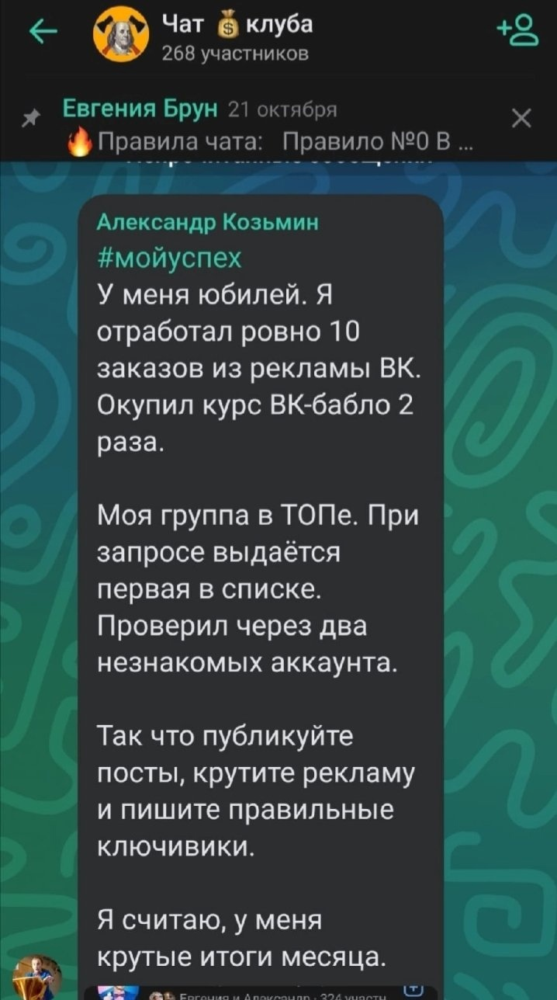

Сколько надо потратить денег и времени на продвижение?
Сегодня наш герой Александр Козьмин – фокусник из Красноярска. Учился у нас на курсе «ВК-Бабло», где мы каждый месяц проводим разборы в зуме для всех учеников. И там происходит такая магия, в которую даже сам Саша с трудом поверил.
Пришел на разбор, улучшили рекламу – результат х2 в доходах.

И ты тоже так можешь. Если возьмешься за свое продвижение.
Сегодня Саша поделился конкретными цифрами:
- Проходил курс 4 месяца.
- Рекламу крутил 3 месяца.
- Потратил на рекламу 13 000 за это время
- Теперь заказы есть каждый месяц
- Времени на продвижение почти не тратит
- Пишет 1-2 поста в месяц
- Рекламу не крутит уже почти год
- Вырос в доходах в 2 раза! (было 50-60 000, стало 110-130 000)
А это 1 300 000 в год вместо 670 000.
Что получается?
Всего 3 месяца рекламы удвоили его в деньгах.
Страницы VK приносят уже клиентов сами по себе без рекламы и почти без постов.
Саша капитальный красавчик. У него классная страница, группа. Он внедряет мои рекомендации. От того и результат.
Теперь пора задумываться уже о следующем уровне. Повышать цены, расширяться. Как раз эти вопросы мы обсуждали на одном из разборов (видео прикрепляю).
Вот видео фрагмент одного из наших ежемесячных зумов с учениками. Там мы рассуждали с Сашей, что делать дальше.
"Январь у меня на расслабончике. Отработал чуть более 10 заказов, мне хватило, для января это нормально.
Февраль уже на половину расписан. Через 3 дня еду на гастроли."
Александр Козьмин
Короче, Саша нарасхват. А тебя я задам тебе ключевой вопрос.
Если в VK есть твои потенциальные клиенты, и ты можешь зарабатывать в 2 раза больше, чем сейчас…
Почему ты до сих пор не занимаешься этим по-серьезке?
Начни вместе с нами на курсе ВК-Бабло!